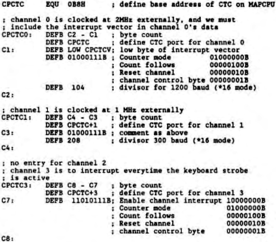

Scorpio News |
April–June 1987 – Volume 1. Issue 2. |
| Page 12 of 51 |
|---|
DEFB Number of bytes to be sent DEFB Port to address DEFB data1 DEFB data1 ....... DEFB dataN
This differs slightly from the method used in the MAP80 BIOS in that they reverse the port address and byte count (you have been warned!)
Of this, what needs explanation? Channels 0 and 1 are clocked to the CLK/TRGn pins with 2 MHz and 1 MHz clocks. Having defined the required baudrates (1200 and 300), we now need to calculate the divisors. Serial I/O chips usually require their clocks at 16* the required baudrate in the case of channel 0, 1200 baud demands a frequency of 19.2 KHz. So the required divisor is:
| 2000000 | ||
| Channel 0 divisor = | ----------- | = 104.167 |
| 1200*16 |
for the purposes of the CTC, a divisor of 104 will be quite adequate.
Channel 1 presents a similar calculation:
| 1000000 | ||
| Channel 1 divisor = | ----------- | = 208.333 |
| 300 * 16 |
so we are all right with 208 as the divisor.
Channel 3 is explained by the comments. But, I hear someone say, just what is happening? The external clock is being divided down by the CTC channel using the divisors set out above. Everytime the counter hits zero, it outputs a pulse
| Page 12 of 51 |
|---|